Programming
Python, C Programming
B.Tech CSE • AI Enthusiast • Creative Designer
A second-year B.Tech Computer Science & Engineering student at Greater Noida Institute of Technology, building practical skills in programming, web technologies, AI and visual content creation.
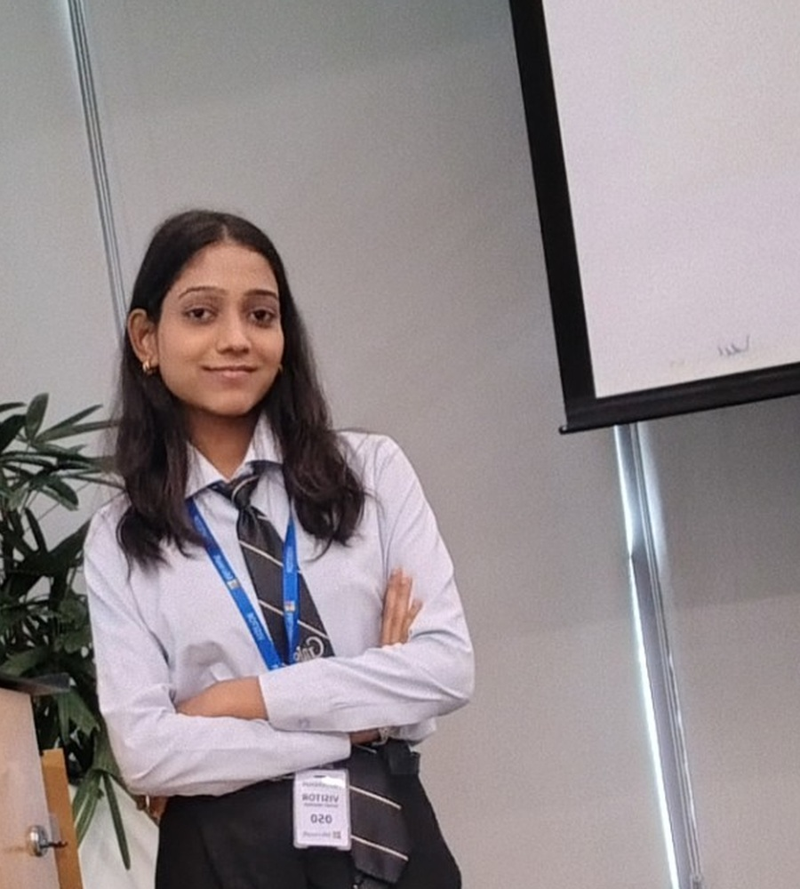
Computer Science & Engineering
Greater Noida Institute of TechnologyAbout Me
I'm Anushka Kumari, a second-year B.Tech Computer Science & Engineering student at Greater Noida Institute of Technology. I enjoy learning through projects and exploring how technology can solve practical problems.
My interests span programming, artificial intelligence and web technologies, while my creative side includes graphic design, thumbnails, posters, video editing, template-driven social media graphics and marketing items.
Skills
Python, C Programming
HTML, CSS
AI concepts, chatbot development, Agentic AI
Thumbnail design, poster design, template-driven social media graphics and marketing items
Creative video editing and visual content production
Combining technical thinking with visual communication and design
My Focus Areas
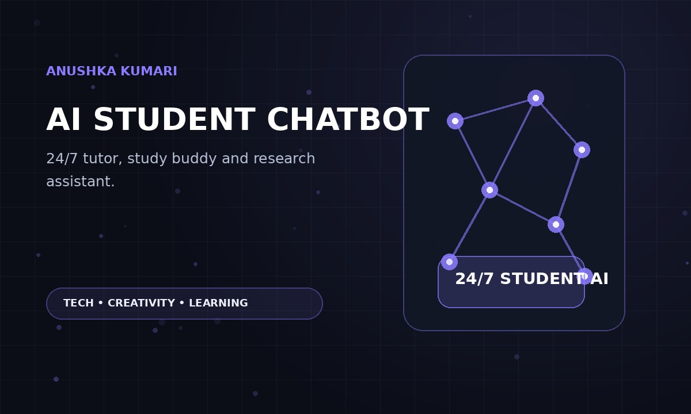
Building useful AI experiences for student support and learning.
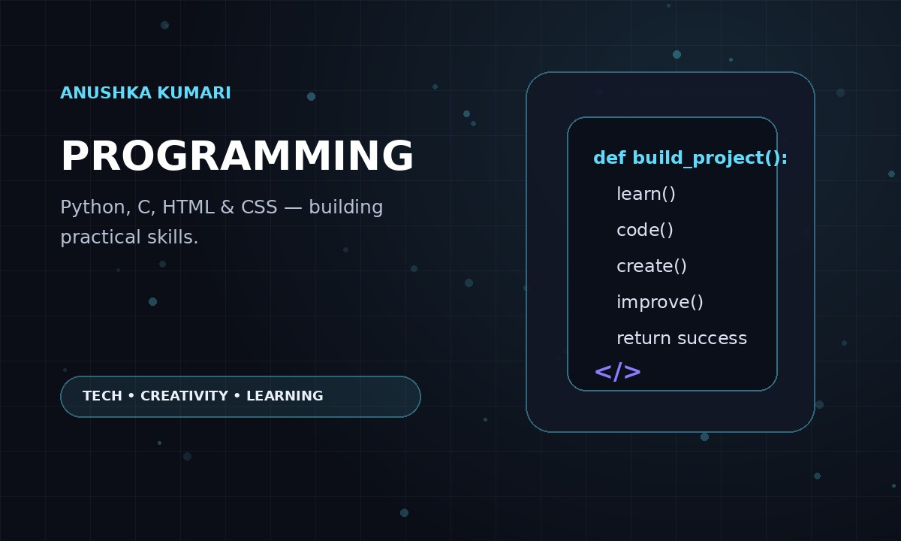
Growing practical skills through Python, C, HTML and CSS.
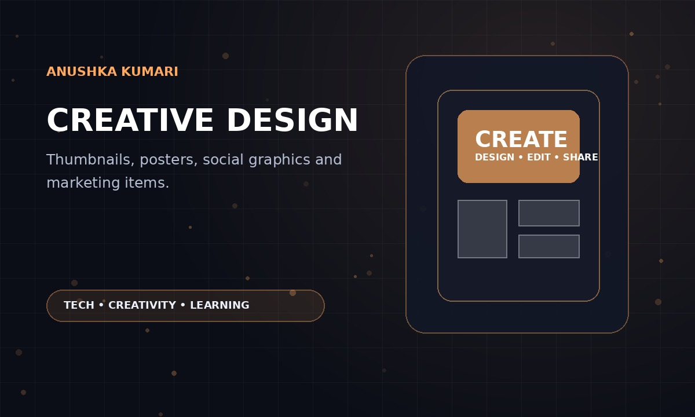
Creating thumbnails, posters, social graphics and marketing visuals.
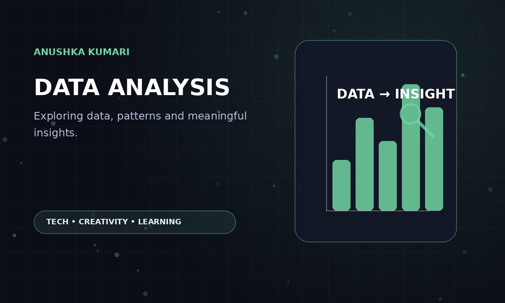
Exploring data and developing analytical thinking through learning projects.
Projects
AI • Completed
An AI chatbot for students that acts as a 24/7 personal tutor, study buddy and research assistant. It helps explain complex topics and provides conversational support for learning.
Student Utility • In Progress
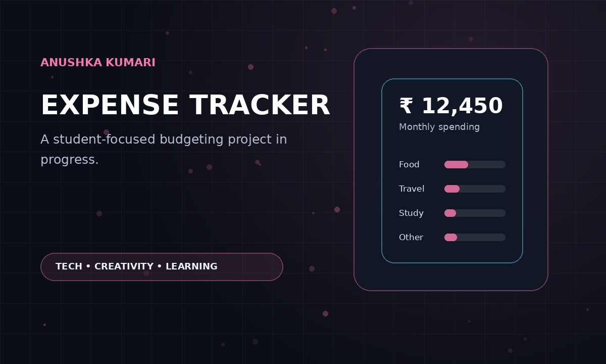
A planned student-focused expense tracker to help manage everyday spending, organize expenses and develop better budgeting habits. The project is currently in progress.
Experience & Exposure
Internship • August 2026
Completed an IBM–NASSCOM internship in August 2026, gaining practical exposure through structured technology learning and project-oriented work.
Industry Visit • 8 August 2026
Participated in the Microsoft Industrial Visit Program 2026 organized by the GNIOT CSE Tech Club in association with the Department of Computer Science & Engineering.
Certificates
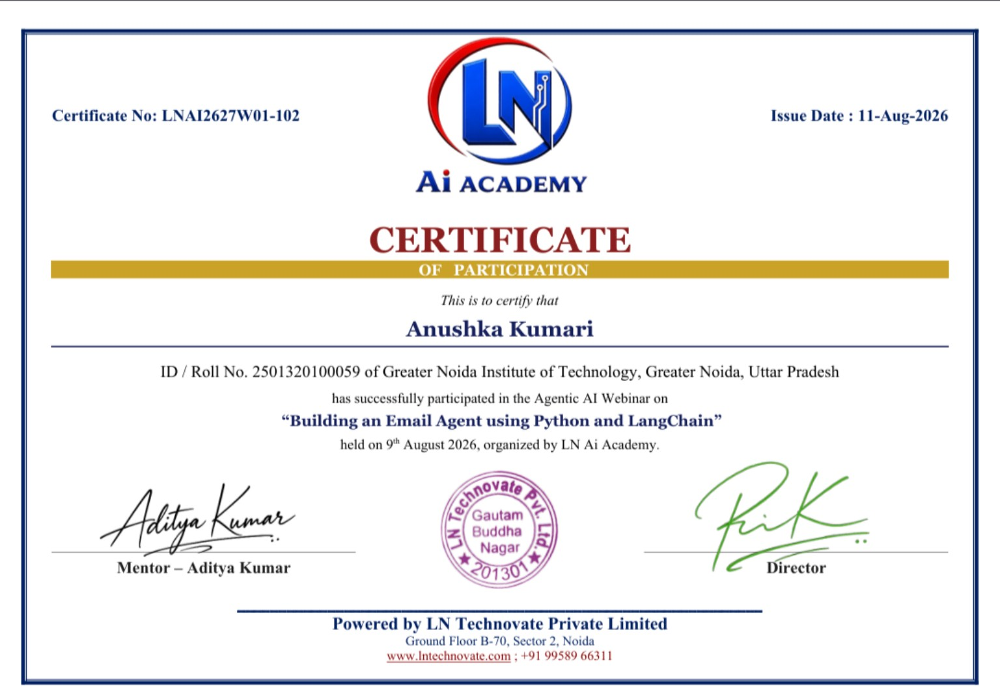
Agentic AI Webinar • 9 Aug 2026
Certificate of participation from LN AI Academy.
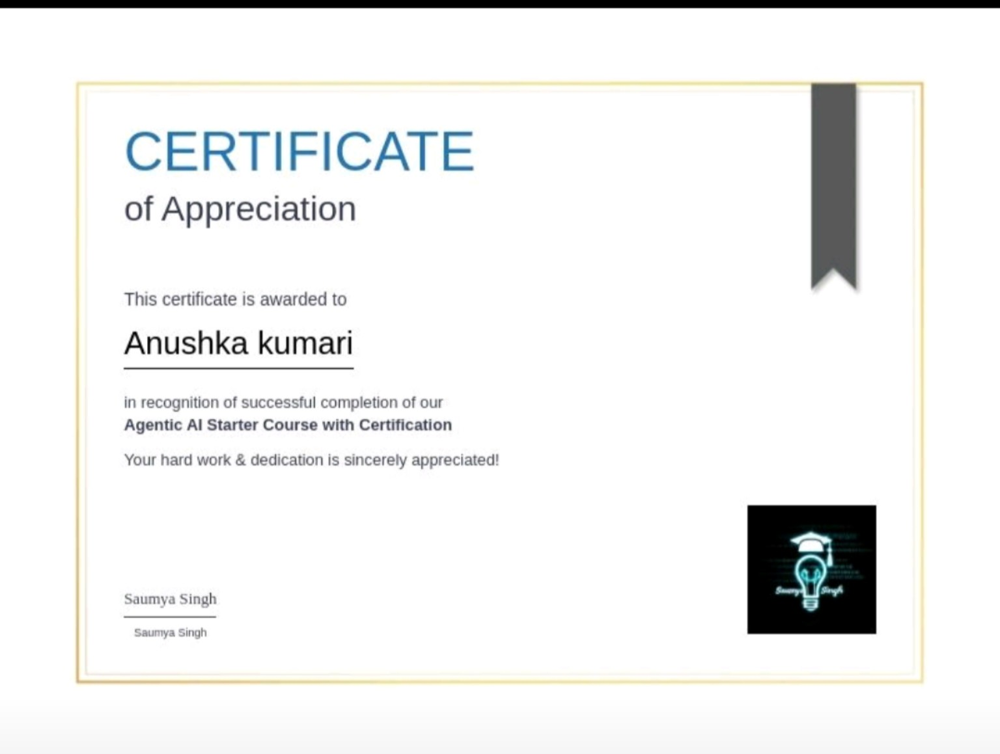
Agentic AI
Certificate of appreciation for successful completion of the Agentic AI Starter Course with Certification.
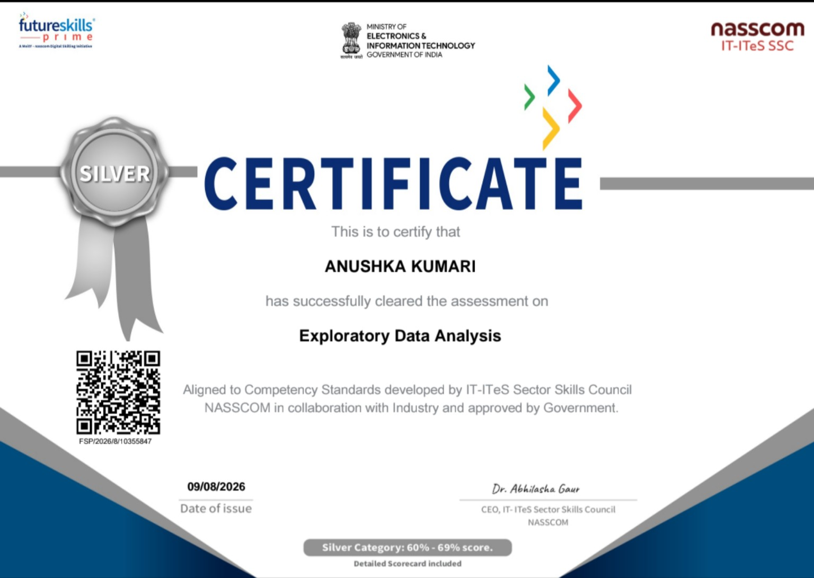
FutureSkills Prime • NASSCOM
Successfully cleared the assessment; Silver category certificate.
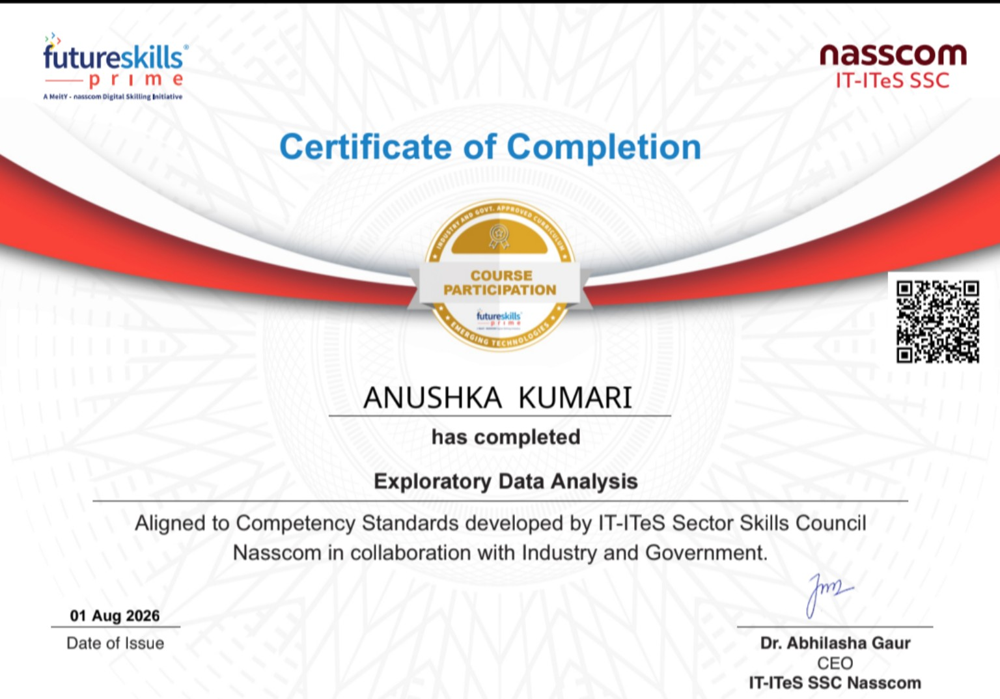
FutureSkills Prime • NASSCOM
Certificate of completion for Exploratory Data Analysis.
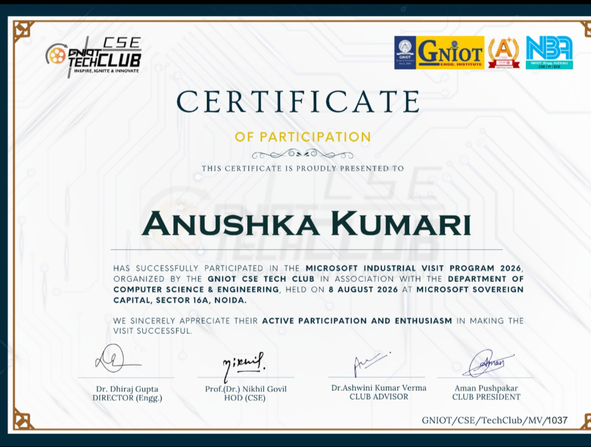
GNIOT CSE Tech Club • 8 Aug 2026
Certificate of participation for the Microsoft Industrial Visit Program at Microsoft Sovereign Capital, Noida.
Internship • August 2026
Completed in August 2026. Certificate can be added here when you receive it.
Certificate pendingContact
Open to learning opportunities, collaborations, projects and conversations around technology and creativity.
anushkakumari4421@gmail.com